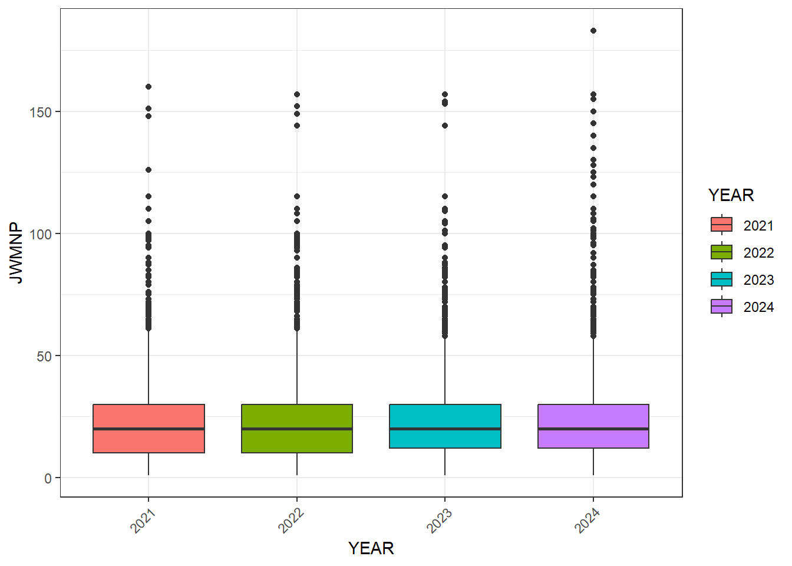
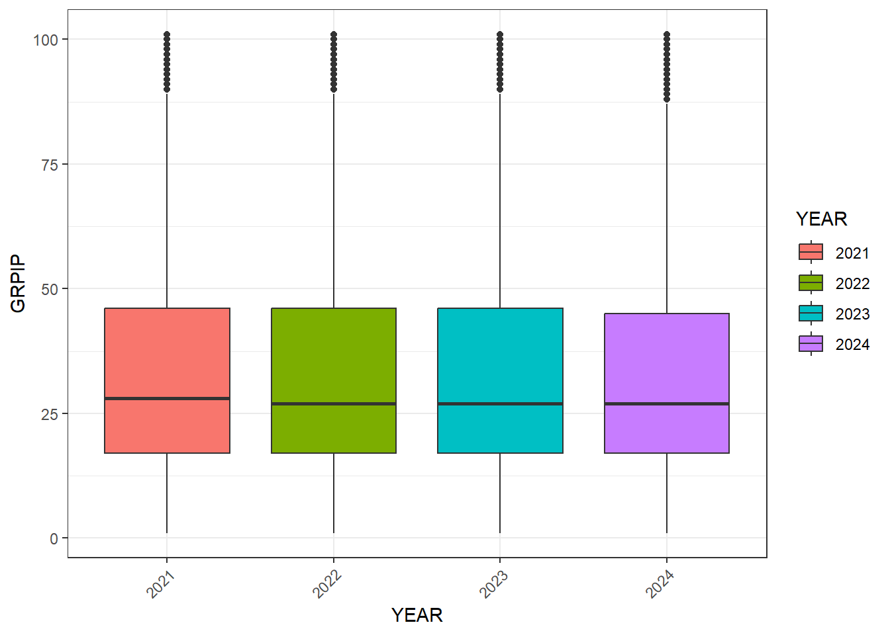
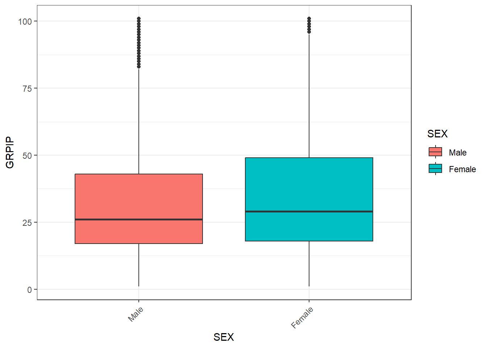
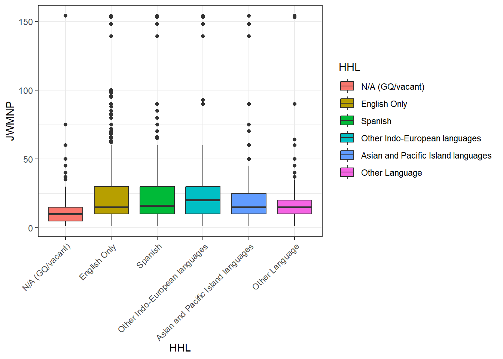
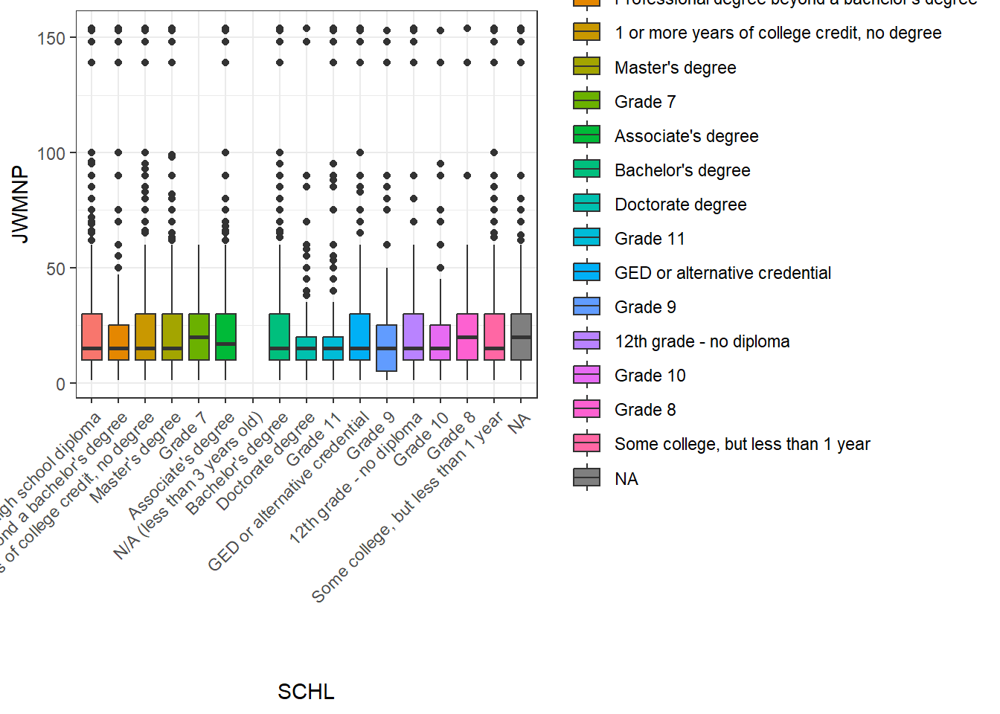
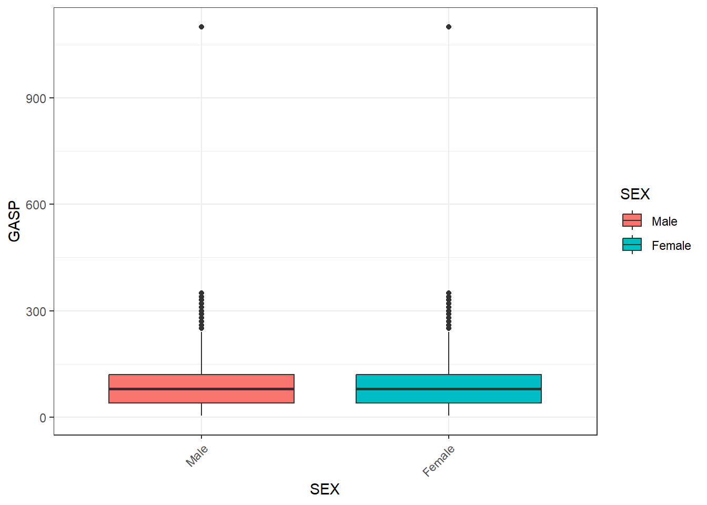
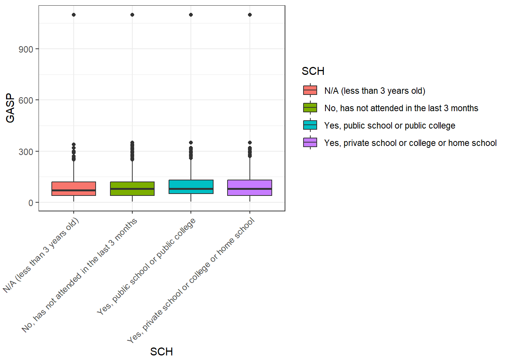

years <- c('2021', '2022', '2023', '2024')Riley_Project1
Project Description
This project will manipulate and process data sets from a census API and then summarize and plot returned data, mainly using custom functions.
Function Development
This project will utilize the Public Use Microdata Sample (PUMS) Census API. We will consider the years 2021-2024 for the basic 1-Year Estimates (will not include Puerto Rico).
ACS 1-Year Public Use Microdata Sample Variables
- First, the JSON files with the variable descriptions for each year (2021-2024) will be downloaded. We only want to parse the following subset of variables:
- AGEP - Age
- GASP - Gas cost (monthly cost, use ADJHSG to adjust GASP to constant dollars)
- GRPIP - Gross rent as a percentage of household income past 12 months
- JWAP - Time of arrival at work (hour and minute)
- JWDP - Time of departure for work (hour and minute)
- JWMNP - Travel time to work
- PWGTP - PUMS person weight
- FER - Gave birth to child within the past 12 months
- HHL - Household language
- SCH - School enrollment
- SCHL - Educational attainment
- SEX - Sex
- ST (for 2021, 2022)/STATE (for 2023, 2024) - State Code based on 2020 Census definitions
- REGION - Region code based on 2020 Census definitions
- DIVISION - Division code based on 2020 Census definitions
To avoid repetitive code, write a function to pull each year’s variable and their values and put them in a list, then save the all the lists to an .rds file:
First, create a vector the years we’re interested in:
Next, create two vectors of the desired variables, since the “state” variable is named differently in different years:
subVar2122 <- c('AGEP', 'GASP', 'GRPIP', 'JWAP', 'JWDP', 'JWMNP', 'PWGTP', 'FER', 'HHL', 'SCH', 'SCHL', 'SEX', 'ST', 'REGION', 'DIVISION')
subVar2324 <- c('AGEP', 'GASP', 'GRPIP', 'JWAP', 'JWDP', 'JWMNP', 'PWGTP', 'FER', 'HHL', 'SCH', 'SCHL', 'SEX', 'STATE', 'REGION', 'DIVISION')Now, write a function to access the JSON, parse the data, and pull out the desired variables and their values for a given year:
getVarVal <- function(year) {
# Download the JSON
getURL <- GET(paste0('https://api.census.gov/data/', year, '/acs/acs1/pums/variables.json'))
# Parse the JSON
jsonParse <- fromJSON(rawToChar(getURL$content))
# Create an empty list for the variables and their values to go in
subVarLs <- list()
# Check what the value of year is and use the first for loop if it is 2021 or 2022 and the second for loop if it is 2023 or 2024
if (year == '2021' | year == '2022') {
# Loop through each value in the subset of variables vector
for (i in subVar2122) {
# Pull the variable and its values out of the large list and put them in a list
subVarLs <- c(subVarLs, jsonParse[["variables"]][i])
}
} else {
for (i in subVar2324) {
subVarLs <- c(subVarLs, jsonParse[["variables"]][i])
}
}
# Return the list with the variables and their values
return(subVarLs)
}Run this function on each value in the vector of years:
for (year in years) {
assign(x = paste0('varList', year), value = getVarVal(year))
}Now save all four year lists to an .rds file:
write_rds(list(varList2021 = varList2021, varList2022 = varList2022, varList2023 = varList2023, varList2024 = varList2024), file = 'data/varLists.rds', compress = 'none')Write functions allowing users to easily query the PUMS Census API
Create vectors of allowable values for the specificGeography argument in the getPUMS() function for user to reference if necessary:
# Read in .rds file with lists of variables and their values for each year
varLists <- readRDS('data/varLists.rds')
# Create vectors
regionValues <- unname(unlist(c(varLists$varList2021$REGION$values)))
divisionValues <- unname(unlist(c(varLists$varList2021$DIVISION$values)))
stateValues <- unname(unlist(c(varLists$varList2021$ST$values)))Write a function to query the PUM Census API and output a cleanly formatted tibble (a single year of data):
getPUMS <- function(year = '2024', numericVariables = c('AGEP', 'PWGTP'), categoricalVariables = c('SEX'), geographyLevel = 'STATE', specificGeography = NULL, APIkey, ...) {
# Read in .rds file with lists of variables and their values for each year
varLists <- readRDS('data/varLists.rds')
# --
# Vectors to check inputs against
allowNumVar <- c('PWGTP', 'AGEP', 'GASP', 'GRPIP', 'JWAP', 'JWDP', 'JWMNP')
allowCatVar <- c('FER', 'HHL', 'SCH', 'SCHL', 'SEX')
allowGeoLev <- c('REGION', 'DIVISION', 'STATE')
allowRegion <- unname(unlist(c(varLists$varList2021$REGION$values)))
allowDivision <- unname(unlist(c(varLists$varList2021$DIVISION$values)))
allowState <- unname(unlist(c(varLists$varList2021$ST$values)))
# --
# Create a correctly formatted data frame of JWAP values to parse the JWAP
# variable if the user requests it
if ('JWAP' %in% numericVariables) {
# Pull out the named values possible for the JWAP variable and convert them
# to a one-column data frame
jwapValues <- t(data.frame(varLists$varList2024$JWAP$values$item))
# Move the names of the values into a column
jwapValues <- data.frame(item = as.numeric(names(varLists$varList2024$JWAP$values$item)),
value = jwapValues,
row.names = NULL)
# Remove the observation for NA values
jwapValues <- subset(jwapValues, item != 0)
# Split the value column into two columns in order to calculate the midpoint
# of the time period
jwapValues <- separate_wider_delim(jwapValues,
cols = 'value',
delim = ' to ',
names = c('bRange', 'eRange'))
# Replace 'a.m.' and 'p.m.' with 'AM' and 'PM' for easier parsing to time
# class
jwapValues$bRange <- str_replace_all(jwapValues$bRange, c('a.m.' = 'AM',
'p.m.' = 'PM'))
jwapValues$eRange <- str_replace_all(jwapValues$eRange, c('a.m.' = 'AM',
'p.m.' = 'PM'))
# Convert the 'bRange' and 'eRange' variables into time objects
jwapValues$bRange <- parse_date_time(jwapValues$bRange, '%I:%M %p')
jwapValues$eRange <- parse_date_time(jwapValues$eRange, '%I:%M %p')
# Calculate the middle of each time period
jwapValues$midpoint <- as_hms(jwapValues$bRange + ((jwapValues$eRange - jwapValues$bRange)/2))
# Add a value for missing time values back in (to correspond with the
# original value "N/A (not a worker; worker who worked from home)")
jwapValues <- rbind(jwapValues, c(0, NA, NA, NA))
}
# --
# Create a correctly formatted data frame of JWDP values to parse the JWDP
# variable if the user requests it
if ('JWDP' %in% numericVariables) {
# Pull out the named values possible for the JWDP variable and convert them
# to a one-column data frame
jwdpValues <- t(data.frame(varLists$varList2024$JWDP$values$item))
# Move the names of the values into a column
jwdpValues <- data.frame(item = as.numeric(names(varLists$varList2024$JWDP$values$item)),
value = jwdpValues,
row.names = NULL)
# Remove the observation for NA values
jwdpValues <- subset(jwdpValues, item != 0)
# Split the value column into two columns in order to calculate the midpoint
# of the time period
jwdpValues <- separate_wider_delim(jwdpValues,
cols = 'value',
delim = ' to ',
names = c('bRange', 'eRange'))
# Replace 'a.m.' and 'p.m.' with 'AM' and 'PM' for easier parsing to time
# class
jwdpValues$bRange <- str_replace_all(jwdpValues$bRange, c('a.m.' = 'AM',
'p.m.' = 'PM'))
jwdpValues$eRange <- str_replace_all(jwdpValues$eRange, c('a.m.' = 'AM',
'p.m.' = 'PM'))
# Convert the 'bRange' and 'eRange' variables into time objects
jwdpValues$bRange <- parse_date_time(jwdpValues$bRange, '%I:%M %p')
jwdpValues$eRange <- parse_date_time(jwdpValues$eRange, '%I:%M %p')
# Calculate the middle of each time period
jwdpValues$midpoint <- as_hms(jwdpValues$bRange + ((jwdpValues$eRange - jwdpValues$bRange)/2))
# Add a value for missing time values back in (to correspond with the
# original value "N/A (not a worker; worker who worked from home)")
jwdpValues <- rbind(jwdpValues, c(0, NA, NA, NA))
}
# --
# Create a vector of educational attainment values to parse the SCHL variable
# if the user requests it
if ('SCHL' %in% categoricalVariables) {
schlLevels <- c(names(varLists$varList2024[["SCHL"]][["values"]][["item"]]))
schlLabels <- c(unname(unlist(varLists$varList2024[["SCHL"]][["values"]][["item"]])))
}
# --
# Specify default values for 'specificGeography' if user leaves argument NULL
if (is.null(specificGeography) & geographyLevel == 'REGION') {
specificGeography <- 'West'
} else if (is.null(specificGeography) & geographyLevel == 'DIVISION') {
specificGeography <- 'Pacific (West region)'
} else if (is.null(specificGeography) & geographyLevel == 'STATE') {
specificGeography <- 'Oregon/OR'
}
# --
# Check inputs and return error message if criteria aren't met:
# year
if(length(year) > 1 | !(year %in% c('2021', '2022', '2023', '2024'))) {
stop('"year" must be a single year between 2021 and 2024, input as a character string.')
}
# numericVariables
if(length(numericVariables) < 2 | !('PWGTP' %in% numericVariables)) {
stop('"numericVariables" must be a vector containing PWGTP and at least one of the only following variables: AGEP, GASP, GRPIP, JWAP, JWDP, and JWMNP.')
}
for (i in 1:length(numericVariables)) {
if(!(numericVariables[i] %in% allowNumVar)) {
stop('"numericVariables" must be a vector containing PWGTP and at least one of only the following variables: AGEP, GASP, GRPIP, JWAP, JWDP, and JWMNP.')
}
}
# categoricalVariables
if(length(categoricalVariables) < 1) {
stop('"categoricalVariables" must be a vector containing at least one of only the following variables: FER, HHL, SCH, SCHL, and SEX.')
}
for (i in 1:length(categoricalVariables)) {
if(!(categoricalVariables[i] %in% allowCatVar)) {
stop('"categoricalVariables" must be a vector containing at least one of only the following variables: FER, HHL, SCH, SCHL, and SEX.')
}
}
# geographyLevel
if(length(geographyLevel) > 1 | !(geographyLevel %in% allowGeoLev)) {
stop('"geographyLevel" must be only one of the following variables: REGION, DIVISION, or STATE.')
}
# specificGeography
if(geographyLevel == 'REGION' & !(specificGeography %in% c('ALL', 'all', 'All', allowRegion)) | geographyLevel == 'DIVISION' & !(specificGeography %in% c('ALL', 'all', 'All', allowDivision)) | geographyLevel == 'STATE' & !(specificGeography %in% c('ALL', 'all', 'All', allowState))) {
stop('"specificGeography" must be ALL or one of the allowable values associated with the specified value of geographyLevel. See vectors regionValues, divisionValues, and stateValues for allowable values for specificGeography.')
}
# APIkey
if(!is.character(APIkey)) {
stop('"APIkey" must be character string.')
}
# --
# Get numeric values corresponding to specificGeography inputs to paste into
# URL so that the user can put in a 'expected' value rather than a number
if (geographyLevel == 'REGION') {
specificGeographyNum <- names(which(unlist(varLists$varList2021$REGION$values$item) == specificGeography))
} else if (geographyLevel == 'DIVISION') {
specificGeographyNum <- names(which(unlist(varLists$varList2021$DIVISION$values$item) == specificGeography))
} else if (geographyLevel == 'STATE') {
specificGeographyNum <- names(which(unlist(varLists$varList2021$ST$values$item) == specificGeography))
}
# --
# Get data from API
if (specificGeography %in% c('ALL', 'all', 'All')) {
pums <- GET(paste0('https://api.census.gov/data/', year, '/acs/acs1/pums?get=', paste(numericVariables, collapse = ','), ',', paste(categoricalVariables, collapse = ','), '&for=', geographyLevel, ':*&key=', APIkey))
} else {
pums <- GET(paste0('https://api.census.gov/data/', year, '/acs/acs1/pums?get=', paste(numericVariables, collapse = ','), ',', paste(categoricalVariables, collapse = ','), '&for=', geographyLevel, ':', specificGeographyNum, '&key=', APIkey))
}
# --
# Pull out the data and convert it to a tibble
pumstbl <- as_tibble(fromJSON(rawToChar(pums$content)),
.name_repair = 'unique_quiet')
colnames(pumstbl) <- c(pumstbl[1,])
pumstbl <- slice(pumstbl, -1)
pumstbl
# --
# Convert variables to the correct type:
# Numeric (PWGTP, AGEP, GASP, GRPIP, JWAP, JWDP, and JWMNP)
for (i in 1:ncol(pumstbl)) {
if (colnames(pumstbl)[i] %in% allowNumVar) {
pumstbl[,i] <- as.numeric(unlist(pumstbl[,i]))
}
}
# Time - replace the numeric code value with the time (JWAP, JWDP)
if ('JWAP' %in% colnames(pumstbl)) {
pumstbl <- pumstbl |>
mutate(JWAP = recode_values(JWAP,
from = jwapValues$item,
to = jwapValues$midpoint))
}
if ('JWDP' %in% colnames(pumstbl)) {
pumstbl <- pumstbl |>
mutate(JWDP = recode_values(JWDP,
from = jwdpValues$item,
to = jwdpValues$midpoint))
}
# Categorical - convert to factor (FER, HHL, SCH, SCHL, and SEX)
if ('FER' %in% colnames(pumstbl)) {
pumstbl <- pumstbl |>
mutate(FER = factor(FER,
levels = c('0', '1', '2'),
labels = c('N/A (less than 15 years/greater than 50 years/ male)', 'Yes', 'No')))
}
if ('HHL' %in% colnames(pumstbl)) {
pumstbl <- pumstbl |>
mutate(HHL = factor(HHL,
levels = c('0', '1', '2', '3', '4', '5'),
labels = c('N/A (GQ/vacant)', 'English Only', 'Spanish', 'Other Indo-European languages', 'Asian and Pacific Island languages', 'Other Language')))
}
if ('SCH' %in% colnames(pumstbl)) {
pumstbl <- pumstbl |>
mutate(SCH = factor(SCH,
levels = c('0', '1', '2', '3'),
labels = c('N/A (less than 3 years old)', 'No, has not attended in the last 3 months', 'Yes, public school or public college', 'Yes, private school or college or home school')))
}
if ('SCHL' %in% colnames(pumstbl)) {
pumstbl <- pumstbl |>
mutate(SCHL = factor(SCHL,
levels = c(schlLevels),
labels = c(schlLabels)))
}
if ('SEX' %in% colnames(pumstbl)) {
pumstbl <- pumstbl |>
mutate(SEX = factor(SEX, levels = c('1', '2'), labels = c('Male', 'Female')))
}
# --
# Replace numbers indicating NA with NA in the numeric variables, if they have an NA value (GASP, GRPIP, and JWMNP)
if ('GASP' %in% colnames(pumstbl)) {
pumstbl$GASP[pumstbl$GASP == 3] = NA
}
if ('GRPIP' %in% colnames(pumstbl)) {
pumstbl$GRPIP[pumstbl$GRPIP == 0] = NA
}
if ('JWMNP' %in% colnames(pumstbl)) {
pumstbl$JWMNP[pumstbl$JWMNP == 0] = NA
}
# --
# Rename geography level variable to be all caps (by making all variable names uppercase)
colnames(pumstbl) <- toupper(colnames(pumstbl))
# --
# Change numeric value in geography column to the name of the geography
if ('REGION' %in% colnames(pumstbl)) {
for (i in 1:nrow(pumstbl)) {
pumstbl$REGION[i] <- varLists$varList2021$REGION$values$item[[pumstbl$REGION[i]]]
}
}
if ('DIVISION' %in% colnames(pumstbl)) {
for (i in 1:nrow(pumstbl)) {
pumstbl$DIVISION[i] <- varLists$varList2021$DIVISION$values$item[[pumstbl$DIVISION[i]]]
}
}
if ('STATE' %in% colnames(pumstbl)) {
for (i in 1:nrow(pumstbl)) {
pumstbl$STATE[i] <- varLists$varList2021$ST$values$item[[pumstbl$STATE[i]]]
}
}
# --
# Change class of tibble
class(pumstbl) <- c('census', class(pumstbl))
# --
# Return data
return(pumstbl)
}Write a wrapper function allowing the user to query multiple years of PUMS Census API data using the single-year function created above:
getPUMSyears <- function(years = '2024', numericVariables = c('AGEP', 'PWGTP'), categoricalVariables = c('SEX'), geographyLevel = 'STATE', specificGeography = NULL, APIkey, ...) {
# Set up an empty tibble to add data to
yearsTBL <- tibble()
# Use the getPUMS() function to query the PUMS Census API for each year the user specified in the getPUMSyears() function input
for (year in years) {
outputTBL <- getPUMS(year = year, numericVariables = numericVariables, categoricalVariables = categoricalVariables, geographyLevel = geographyLevel, specificGeography = specificGeography, APIkey = APIkey, ...)
# Add a column with year as the value
outputTBL <- outputTBL |>
mutate(YEAR = rep(year, nrow(outputTBL)))
# Add the data to 'yearsTBL'
yearsTBL <- rbind(yearsTBL, outputTBL)
}
# Return the tibble with data from all requested years
return(yearsTBL)
}PUMS Data Numeric Summary Function
Write a function to specifically summarize objects of class census:
The function will produce sample means and sample standard deviations for the numeric variable(s) and counts for the categorical variable(s)
summary.census <- function(censusTibble, numericVariables = NULL, categoricalVariables = NULL, ...){
# Possible numeric variables to summarize
numVarOptions <- c('AGEP', 'GASP', 'GRPIP', 'JWMNP')
# Possible categorical variables to summarize
catVarOptions <- c('FER', 'HHL', 'SCH', 'SCHL', 'SEX', 'YEAR')
# --
# Pre-allocate vectors for summaries
varMeans <- c()
varSDs <- c()
varCounts <- list()
# --
# Calculate sample mean and sample standard deviation:
# If user does not specify numeric variables
if (is.null(numericVariables)) {
# For each of the numeric variables in the census object
for (i in numVarOptions[numVarOptions %in% colnames(censusTibble)]) {
# Calculate the sample mean and add it to the vector of variables sample means
varMeans <- c(varMeans, (sum(censusTibble[,i]*censusTibble$PWGTP, na.rm = TRUE))/(sum(censusTibble$PWGTP, na.rm = TRUE)))
# Calculate the sample standard deviation and add it to the vector of variable sample standard deviations
varSDs <- c(varSDs, sqrt(sum(censusTibble[,i]^2*censusTibble$PWGTP, na.rm = TRUE)/sum(censusTibble$PWGTP, na.rm = TRUE)-sum(censusTibble[,i]*censusTibble$PWGTP, na.rm = TRUE)/sum(censusTibble$PWGTP, na.rm = TRUE)^2))
}
# Name the elements of the vector (the sample means) with the variable names (the variable each element is the sample mean of)
names(varMeans) <- numVarOptions[numVarOptions %in% colnames(censusTibble)]
# Name the elements of the vector (the sample standard deviations) with the variable names (the variable each element is the sample standard deviation of)
names(varSDs) <- numVarOptions[numVarOptions %in% colnames(censusTibble)]
# If the user does specify numeric variables
} else {
# For each of the numeric variables the user specified
for (i in numericVariables) {
# Calculate the mean and add it to the vector of variables means
varMeans <- c(varMeans, sum(censusTibble[,i]*censusTibble$PWGTP, na.rm = TRUE)/sum(censusTibble$PWGTP, na.rm = TRUE))
# Calculate the standard deviation and add it to the vector of variable standard deviations
varSDs <- c(varSDs, sqrt(sum(censusTibble[,i]^2*censusTibble$PWGTP, na.rm = TRUE)/sum(censusTibble$PWGTP, na.rm = TRUE)-sum(censusTibble[,i]*censusTibble$PWGTP, na.rm = TRUE)/sum(censusTibble$PWGTP, na.rm = TRUE)^2))
}
# Name the elements of the vector (the means) with the variable names (the variable each element is the mean of)
names(varMeans) <- numericVariables
# Name the elements of the vector (the standard deviations) with the variable names (the variable each element is the standard deviation of)
names(varSDs) <- numericVariables
}
# --
# Calculate counts:
# If user does not specify categorical variables
if (is.null(categoricalVariables)) {
# For each of the categorical variables in the census object
for (i in catVarOptions[catVarOptions %in% colnames(censusTibble)]) {
# Create a table of counts for each level of the variable
countTBL <- as_tibble(table(censusTibble[,i]), .name_repair = 'unique_quiet')
# Name the columns with the variable name and n
colnames(countTBL) <- c(paste(i), 'n')
# Add the tibble to the list 'varCounts'
varCounts[[length(varCounts)+1]] <- countTBL
}
# If the user does specify categorical variables
} else {
# For each of the categorical variables the user specified
for (i in categoricalVariables) {
# Create a table of counts for each level of the variable
countTBL <- as_tibble(table(censusTibble[,i]), .name_repair = 'unique_quiet')
# Name the columns with the variable name and n
colnames(countTBL) <- c(paste(i), 'n')
# Add the tibble to the list 'varCounts'
varCounts[[length(varCounts)+1]] <- countTBL
}
}
# --
# Combine summaries in a list
censusSummary <- list(means = varMeans,
stdevs = varSDs,
counts = varCounts)
# --
# Return the summaries
return(censusSummary)
}PUMS Data Graphical Summary Function
Write a function to plot objects of class census:
The function will create a boxplot of the numeric variable at the levels of the categorical variable
plot.census <- function(censusTibble, numericVariable, categoricalVariable, ...){
# Check inputs and return error message if criteria aren't met
if (!length(numericVariable) == 1) {
stop('Only input one numeric variable.')
}
if (length(categoricalVariable) > 1) {
stop('Only input one categorical variable.')
}
# Create boxplot with weights on rows
censusBoxplot <- ggplot(data = censusTibble,
aes(x = get(categoricalVariable),
y = get(numericVariable),
weight = PWGTP,
fill = get(categoricalVariable))) +
geom_boxplot() +
labs(x = categoricalVariable,
y = numericVariable,
fill = categoricalVariable) +
theme_bw() +
theme(axis.text.x = element_text(angle = 45, hjust = 1))
# Return the plot
return(censusBoxplot)
}Investigation
Investigate the census data using the functions created above (API query function and plotting/summarizing functions):
My PUMS Census API Key
key <- '533d84cb67d9d71606e0baf0f4e7f32e4af7c4ce'Examining travel time to work and rent over time and in relation to age
- First, I’ll view the possible values for region to make sure I’m putting a legal value into the
getPUMSyears()function:
regionValues[1] "Northeast" "Puerto Rico" "South" "Midwest" "West" - Then I’ll query the PUMS Census API with the
getPUMS()function:
travelTime <- getPUMSyears(years = c('2021', '2022', '2023', '2024'), numericVariables = c('AGEP', 'GRPIP', 'JWMNP', 'PWGTP'), geographyLevel = 'REGION', specificGeography = 'South', APIkey = key)Okay, this query produces an error, so it’s probably too large
I’ll try the same query, but with a division instead of a region
- Possible values for division
divisionValues [1] "West South Central (South Region)" "Middle Atlantic (Northeast region)"
[3] "West North Central (Midwest region)" "East South Central (South region)"
[5] "East North Central (Midwest region)" "Pacific (West region)"
[7] "Puerto Rico" "South Atlantic (South region)"
[9] "Mountain (West region)" "New England (Northeast region)" - Query
travelTime <- getPUMSyears(years = c('2021', '2022', '2023', '2024'), numericVariables = c('AGEP', 'GRPIP', 'JWMNP', 'PWGTP'), geographyLevel = 'DIVISION', specificGeography = 'East South Central (South region)', APIkey = key)
travelTime# A tibble: 803,734 × 7
AGEP GRPIP JWMNP PWGTP SEX DIVISION YEAR
<dbl> <dbl> <dbl> <dbl> <fct> <chr> <chr>
1 19 NA NA 27 Female East South Central (South region) 2021
2 20 NA 25 66 Female East South Central (South region) 2021
3 85 NA NA 13 Male East South Central (South region) 2021
4 19 NA NA 52 Male East South Central (South region) 2021
5 67 NA NA 51 Female East South Central (South region) 2021
6 20 NA 10 15 Female East South Central (South region) 2021
7 74 NA NA 17 Male East South Central (South region) 2021
8 16 NA NA 61 Male East South Central (South region) 2021
9 83 NA NA 15 Male East South Central (South region) 2021
10 30 NA NA 34 Male East South Central (South region) 2021
# ℹ 803,724 more rows- I’ll look at a numeric summary of the dataset:
summary(travelTime)$means
AGEP GRPIP JWMNP
39.544796 9.100516 10.270320
$stdevs
AGEP GRPIP JWMNP
45.92807 22.69582 21.29667
$counts
$counts[[1]]
# A tibble: 2 × 2
SEX n
<chr> <int>
1 Male 389384
2 Female 414350
$counts[[2]]
# A tibble: 4 × 2
YEAR n
<chr> <int>
1 2021 193964
2 2022 200355
3 2023 202913
4 2024 206502- Now I want to explore my different questions by plotting this dataset
- I think it will be interesting to compare how travel time to work varies as we get farther from the onset of the COVID-19 pandemic in the East South Central Division:
plot(travelTime, numericVariable = 'JWMNP', categoricalVariable = 'YEAR')Warning: Removed 497646 rows containing non-finite outside the scale range
(`stat_boxplot()`).
There does not appear to be any difference in median travel time to work between 2021 and 2024.
- I will also compare gross rent as a percentage of household income past 12 months with travel time:
- Whoops, I forgot this function only does a numeric variable vs. a categorical variable, not two numeric variables. Instead, I’ll look at gross rent as a percentage of household income past 12 months vs. year:
plot(travelTime, numericVariable = 'GRPIP', categoricalVariable = 'YEAR')Warning: Removed 649679 rows containing non-finite outside the scale range
(`stat_boxplot()`).
There appears to be no difference in median gross rent as a percentage of household income past 12 months in the different years.
- And finally, I’ll compare percentage of income going to rent with age:
- Since this won’t work to plot with my summary plotting function either, I’ll look at gross rent as a percentage of household income past 12 months vs. sex:
plot(travelTime, numericVariable = 'GRPIP', categoricalVariable = 'SEX')Warning: Removed 649679 rows containing non-finite outside the scale range
(`stat_boxplot()`).
The median gross rent as a percentage of household income past 12 months appears to be slightly higher for women, as is the third quartile.
Examining travel time to work alongside household language and educational attainment in Idaho (my home state)
- First I’ll query the PUMS Census API with the
getPUMS()function:
traveltHHLSCHL <- getPUMSyears(years = c('2021', '2022', '2023', '2024'), numericVariables = c('JWMNP', 'PWGTP'), categoricalVariables = c('HHL', 'SCHL'), geographyLevel = 'STATE', specificGeography = 'Idaho/ID', APIkey = key)
traveltHHLSCHL# A tibble: 79,136 × 6
JWMNP PWGTP HHL SCHL STATE YEAR
<dbl> <dbl> <fct> <fct> <chr> <chr>
1 NA 14 N/A (GQ/vacant) Regular high school diploma Idaho/ID 2021
2 NA 130 N/A (GQ/vacant) Grade 11 Idaho/ID 2021
3 NA 192 N/A (GQ/vacant) Regular high school diploma Idaho/ID 2021
4 NA 85 N/A (GQ/vacant) Grade 9 Idaho/ID 2021
5 NA 27 N/A (GQ/vacant) Regular high school diploma Idaho/ID 2021
6 NA 114 N/A (GQ/vacant) Regular high school diploma Idaho/ID 2021
7 50 65 N/A (GQ/vacant) Some college, but less than 1 year Idaho/ID 2021
8 NA 35 N/A (GQ/vacant) Associate's degree Idaho/ID 2021
9 NA 10 N/A (GQ/vacant) Grade 11 Idaho/ID 2021
10 NA 159 N/A (GQ/vacant) Grade 11 Idaho/ID 2021
# ℹ 79,126 more rows- I’ll look at a numeric summary of the dataset:
summary(traveltHHLSCHL)$means
JWMNP
9.013449
$stdevs
JWMNP
19.47529
$counts
$counts[[1]]
# A tibble: 6 × 2
HHL n
<chr> <int>
1 N/A (GQ/vacant) 3980
2 English Only 65162
3 Spanish 6691
4 Other Indo-European languages 1678
5 Asian and Pacific Island languages 1024
6 Other Language 601
$counts[[2]]
# A tibble: 25 × 2
SCHL n
<chr> <int>
1 Regular high school diploma 14233
2 No schooling completed 0
3 Grade 1 0
4 Kindergarten 0
5 Grade 4 0
6 Professional degree beyond a bachelor's degree 954
7 1 or more years of college credit, no degree 10310
8 Master's degree 4214
9 Grade 7 1193
10 Associate's degree 5716
# ℹ 15 more rows
$counts[[3]]
# A tibble: 4 × 2
YEAR n
<chr> <int>
1 2021 17936
2 2022 19884
3 2023 20447
4 2024 20869- Now I want to explore my different questions by plotting this dataset
- How does travel time to work vary between households with different languages?
plot(traveltHHLSCHL, categoricalVariable = 'HHL', numericVariable = 'JWMNP')Warning: Removed 49229 rows containing non-finite outside the scale range
(`stat_boxplot()`).
The median travel time to work appears to be similar, although households that speak an “Other Indo-European language” appear to have slightly higher travel times.
- How does travel time to work vary at different educational attainment levels?
plot(traveltHHLSCHL, categoricalVariable = 'SCHL', numericVariable = 'JWMNP')Warning: Removed 49229 rows containing non-finite outside the scale range
(`stat_boxplot()`).
This plot appears to show slightly higher median travel times to work for educational attainment levels of Grade 7 and Grade 8 than the other levels. There is also a box for NA with slightly higher median travel times, but those observations could have been removed from the dataset.
Examining sex and school enrollment against gas cost
- First I’ll query the PUMS Census API with the
getPUMS()function:
schoolSexGas <- getPUMSyears(numericVariables = c('GASP', 'JWAP', 'PWGTP'), categoricalVariables = c('SEX', 'SCH'), geographyLevel = 'STATE', specificGeography = NULL, APIkey = key)
schoolSexGas# A tibble: 44,395 × 7
GASP JWAP PWGTP SEX SCH STATE YEAR
<dbl> <time> <dbl> <fct> <fct> <chr> <chr>
1 NA NA 48 Female Yes, private school or college or home… Oreg… 2024
2 NA NA 29 Female No, has not attended in the last 3 mon… Oreg… 2024
3 NA NA 31 Male No, has not attended in the last 3 mon… Oreg… 2024
4 NA NA 10 Male No, has not attended in the last 3 mon… Oreg… 2024
5 NA NA 2 Male No, has not attended in the last 3 mon… Oreg… 2024
6 NA 10:17 36 Male No, has not attended in the last 3 mon… Oreg… 2024
7 NA NA 11 Male No, has not attended in the last 3 mon… Oreg… 2024
8 NA NA 25 Female No, has not attended in the last 3 mon… Oreg… 2024
9 NA NA 81 Female No, has not attended in the last 3 mon… Oreg… 2024
10 NA NA 56 Male No, has not attended in the last 3 mon… Oreg… 2024
# ℹ 44,385 more rows- I’ll look at a numeric summary of the dataset:
summary(schoolSexGas, categoricalVariables = c('SEX', 'SCH'))$means
GASP
50.59535
$stdevs
GASP
115.4109
$counts
$counts[[1]]
# A tibble: 2 × 2
SEX n
<chr> <int>
1 Male 21929
2 Female 22466
$counts[[2]]
# A tibble: 4 × 2
SCH n
<chr> <int>
1 N/A (less than 3 years old) 992
2 No, has not attended in the last 3 months 34689
3 Yes, public school or public college 6981
4 Yes, private school or college or home school 1733- Now I want to explore my different questions by plotting this dataset
- How does gas cost vary by sex?
plot(schoolSexGas, categoricalVariable = 'SEX', numericVariable = 'GASP')Warning: Removed 22487 rows containing non-finite outside the scale range
(`stat_boxplot()`).
There is no obvious difference in gas cost between sexes. However, the few outliers at gas cost = above $1000 force the y-axis to be larger, which constricts the portion of the plot with the boxes, so there could be some difference that just isn’t visible at this scale.
- How does gas cost to vary by school attendance?
plot(schoolSexGas, categoricalVariable = 'SCH', numericVariable = 'GASP')Warning: Removed 22487 rows containing non-finite outside the scale range
(`stat_boxplot()`).
Again, outliers force all the boxes to be very narrow visually; they all seem to have the same median. It seems odd that observations with a school enrollment level of N/A (less than 3 years old) would have values for gas cost. It would be useful to review the data more thoroughly.
Examining travel time to work in different states in 2023
- First I’ll query the PUMS Census API with the
getPUMS()function:
allStTravel <- getPUMSyears(year = '2023', numericVariables = c('JWMNP', 'PWGTP'), geographyLevel = 'STATE', specificGeography = 'ALL', APIkey = key)- This was an attempt to show that the user can input an ‘all’ option for specific geography, but the query produced an error, so it’s probably too large